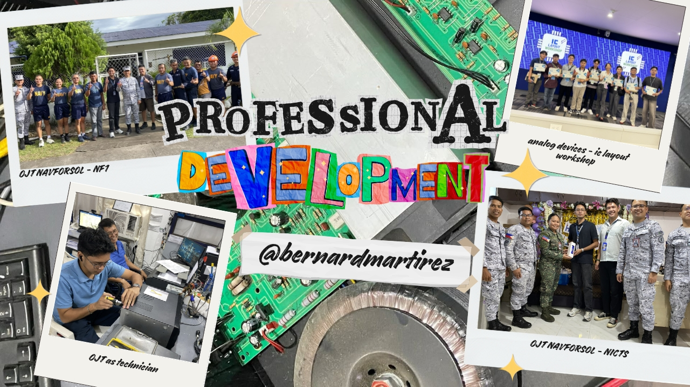
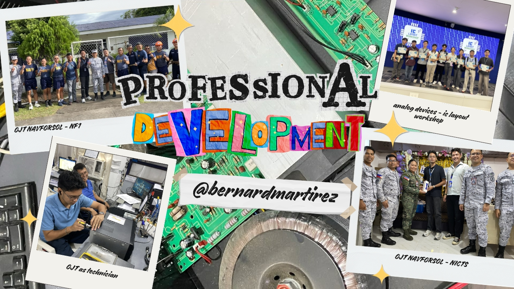

← Back to Portfolio

← Back to Portfolio

Professional Development
My academic journey began within the disciplined structures of Mechanical Engineering, where I immersed myself in the study of kinematics, thermodynamics, and the physical machinery that has long powered industry. I held a deep respect for the tangible nature of the field—the gears, the engines, and the sheer physicality of moving parts. However, as I delved deeper, I felt a growing disconnect. I realized that while I was learning how to build and maintain the "body" of modern infrastructure, my curiosity was increasingly drawn to its "brain." I found myself less fascinated by the static nature of heavy machinery and more captivated by the rapid, almost invisible evolution of the intelligence that controlled it.
The pivot point came when I recognized a fundamental distinction in my own interests: I did not just want to work with machines; I wanted to drive the advancement of technology itself. I saw Mechanical Engineering as the foundation of what is, but Electronics Engineering represented the limitlessness of what could be. The pace of innovation in electronics—where processors become faster and systems smarter every year—offered a landscape of constant evolution that mechanical systems could not match. I wanted to be at the forefront of that wave, designing the circuits and systems that define the future, rather than refining the mechanisms of the past.
Transitioning into Electronics Engineering was not merely a change of major; it was a realignment of my career trajectory with my core passion for innovation. This shift allowed me to focus on the intricate, microscopic architectures that underpin the modern world, from telecommunications to automation. It was a challenging transition, requiring a shift in mindset from macro-physics to micro-logic, but it was the correct one. Today, I am driven by the dynamic nature of this field, confident that I am exactly where I need to be—contributing to the relentless advancement of technology rather than simply maintaining the machines of yesterday.